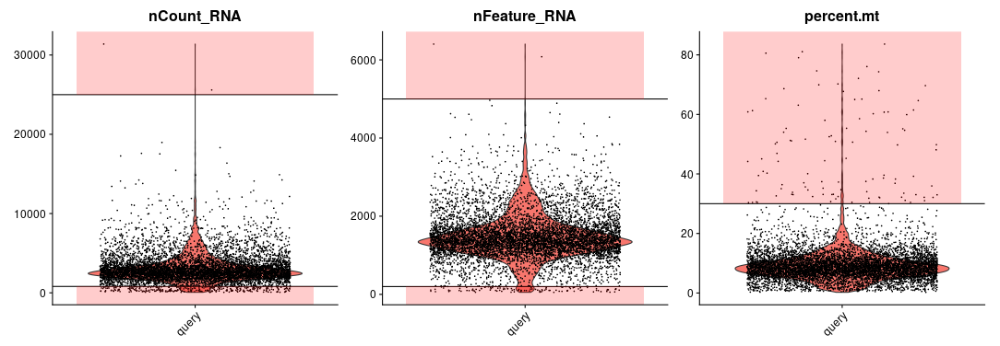
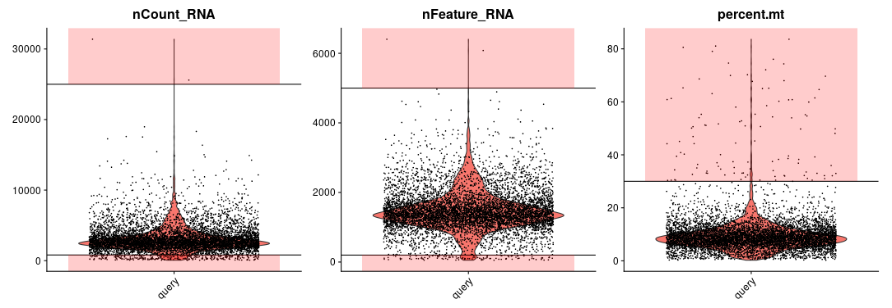

scRNA-analysis
WangRong423
2021-05-28
Last updated: 2021-05-31
Checks: 2 0
Knit directory: cov19-vaccine-project/
This reproducible R Markdown analysis was created with workflowr (version 1.6.2). The Checks tab describes the reproducibility checks that were applied when the results were created. The Past versions tab lists the development history.
Great! Since the R Markdown file has been committed to the Git repository, you know the exact version of the code that produced these results.
Great! You are using Git for version control. Tracking code development and connecting the code version to the results is critical for reproducibility.
The results in this page were generated with repository version 434a47a. See the Past versions tab to see a history of the changes made to the R Markdown and HTML files.
Note that you need to be careful to ensure that all relevant files for the analysis have been committed to Git prior to generating the results (you can use wflow_publish or wflow_git_commit). workflowr only checks the R Markdown file, but you know if there are other scripts or data files that it depends on. Below is the status of the Git repository when the results were generated:
Ignored files:
Ignored: analysis/QC-chart.png
Ignored: analysis/QC1.png
Ignored: analysis/QC2.png
Ignored: analysis/QC3.png
Ignored: analysis/batch removal.png
Ignored: analysis/merge.png
Unstaged changes:
Deleted: analysis/about.Rmd
Deleted: analysis/license.Rmd
Note that any generated files, e.g. HTML, png, CSS, etc., are not included in this status report because it is ok for generated content to have uncommitted changes.
These are the previous versions of the repository in which changes were made to the R Markdown (analysis/pipeline-scRNA-analysis.Rmd) and HTML (docs/pipeline-scRNA-analysis.html) files. If you’ve configured a remote Git repository (see ?wflow_git_remote), click on the hyperlinks in the table below to view the files as they were in that past version.
| File | Version | Author | Date | Message |
|---|---|---|---|---|
| Rmd | 434a47a | WangRong423 | 2021-05-31 | wflow_publish(c(“analysis/index.Rmd”, “analysis/pipeline-scRNA-analysis.Rmd”)) |
| html | 9ac3a57 | WangRong423 | 2021-05-28 | Build site. |
| html | f875f11 | WangRong423 | 2021-05-28 | Build site. |
| Rmd | dc9420e | WangRong423 | 2021-05-28 | Publish the initial files for cov19-vaccine-project |
scRNA-analysis-pipeline
样本说明
- sample1：SecondVaccination-14day
- sample2：SecondVaccination-0day
- sample3：healthy ## overview of the single-cell RNA-seq data
 # data preprocessing ## data quality 
# data preprocessing ## data quality 
data quality control
genes expressed at a proportion >0.1% of the data(why 0.1%) and cells with >200 genes detected were selected for further analyses. Low-quality cells were removed if they met the following criteria: (1) <800 unique molecular identifiers (UMIs); (2) <200 genes; (3) >10% ratio derived from the mitochondrial genome.code
library(Seurat)
library(cowplot)
library(ggplot2)
library(Matrix)
library(dplyr)
library(umap)
sample1 <- Read10X(data.dir = "/home/caslx/Database/COVID_19_Data/3SampleData_0512/sample1/outs/filtered_feature_bc_matrix/")
dim(sample1$`Gene Expression`)
sample1 <- CreateSeuratObject(counts = sample1$`Gene Expression`,min.cells = 10, min.features = 200, project = "sample1")
dim(sample1)
gene1_1 <- sample1$nFeature_RNA
counts1_1<- sample1$nCount_RNA
summary(gene1_1)
summary(counts1_1)
sample1[["percent.mt"]] <- PercentageFeatureSet(sample1, pattern = "^MT-")
pdf(file="/home/rongwang/results/pipline_results/2021.5.20.pdf")
VlnPlot(sample1, features = c("nFeature_RNA", "nCount_RNA", "percent.mt"), ncol = 3)
sample_1 <- subset(sample1, subset = nFeature_RNA > 200 & nFeature_RNA < 5000 & nCount_RNA > 800 & nCount_RNA < 25000 & percent.mt <10)
gene1_2 <- sample_1$nFeature_RNA
counts1_2<-sample_1T$nCount_RNA
summary(gene1_2)
summary(counts1_2)
saveRDS(sample_1,file="/home/caslx/Database/COVID_19_Data/wr_scRNA/sample_1.rds")
sample2 <- Read10X(data.dir = "/home/caslx/Database/COVID_19_Data/3SampleData_0512/sample2/outs/filtered_feature_bc_matrix/")
dim(sample2$`Gene Expression`)
sample2 <- CreateSeuratObject(counts = sample2$`Gene Expression`, min.cells = 7, min.features = 200,project = "sample2")
dim(sample2)
gene2_1 <- sample2$nFeature_RNA
counts2_1<- sample2$nCount_RNA
summary(gene2_1)
summary(counts2_1)
sample2[["percent.mt"]] <- PercentageFeatureSet(sample2, pattern = "^MT-")
VlnPlot(sample2, features = c("nFeature_RNA", "nCount_RNA", "percent.mt"), ncol = 3)
sample_2 <- subset(sample2, subset = nFeature_RNA > 200 & nFeature_RNA < 5000 & nCount_RNA > 800 & nCount_RNA < 25000 & percent.mt <10)
gene2_2 <- sample_2$nFeature_RNA
counts2_2<-sample_2T$nCount_RNA
summary(gene2_2)
summary(counts2_2)
saveRDS(sample_2,file="/home/caslx/Database/COVID_19_Data/wr_scRNA/sample_2.rds")
sample3 <- Read10X(data.dir = "/home/caslx/Database/COVID_19_Data/3SampleData_0512/sample3/outs/filtered_feature_bc_matrix/",gene.column = 2,cell.column = 1)
dim(sample3$`Gene Expression`)
sample3 <- CreateSeuratObject(counts = sample3$`Gene Expression, min.cells = 3, min.features = 200,project = "sample3")
dim(sample3)
gene3_1 <- sample3$nFeature_RNA
counts3_1<- sample3$nCount_RNA
summary(gene3_1)
summary(counts3_1)
sample3[["percent.mt"]] <- PercentageFeatureSet(sample3, pattern = "^MT-")
VlnPlot(sample3, features = c("nFeature_RNA", "nCount_RNA", "percent.mt"), ncol = 3)
dev.off ()
sample3_2 <- subset(sample3, subset = nFeature_RNA > 200 & nFeature_RNA < 5000 & nCount_RNA > 800 & nCount_RNA < 25000 & percent.mt <30)
gene3_2 <- sample_3$nFeature_RNA
counts2_2<-sample_3T$nCount_RNA
summary(gene3_2)
summary(counts3_2)
saveRDS(sample_3,file="/home/caslx/Database/COVID_19_Data/wr_scRNA/sample_3.rds")
sample intergration
first,we identified 2,000 features with high cell-to-cell variation . Second, we identified ‘anchors’ between individual datasetswith the FindIntegrationAnchors function and inputted these anchors into the IntegrateData function to create a batch-corrected expression matrix of all cells.
code
library(Seurat)
library(cowplot)
library(ggplot2)
library(Matrix)
library(dplyr)
library(umap)
mymerg<-merge(x=sample1,y=sample2,sample3)
mymerg <- NormalizeData(mymerg, normalization.method = "LogNormalize", scale.factor = 10000)
mymerg <- FindVariableFeatures(mymerg, selection.method = "vst", nfeatures = 2000)
mymerg <- ScaleData(mymerg,features=VariableFeatures(mymerg))
mymerg <- RunPCA(mymerg, features = VariableFeatures(object = mymerg))
mymerg <- FindNeighbors(mymerg, dims = 1:20)
mymerg <- FindClusters(mymerg, resolution = 0.5)
mymerg <- RunUMAP(mymerg, dims = 1:20)
mymerg <- RunTSNE(mymerg, dims = 1:20)
pdf(file="/home/rongwang/results/pipline_results/2021.5.20.umap.pdf")
DimPlot(mymerg, reduction = "umap",label = TRUE,group.by="orig.ident")+ggtitle("merge")
dev.off()
mymerg<-merge(x=sample_1,y=c(sample_2,sample_3))
mymerg
sample.list <- sample.list[c("sample1", "sample2", "sample3")]
for (i in 1:length(sample.list)) {
sample.list[[i]] <- NormalizeData(sample.list[[i]], verbose = FALSE)
sample.list[[i]] <- FindVariableFeatures(sample.list[[i]], selection.method = "vst", nfeatures = 2000, verbose = FALSE)
}
sample123_Anchors <- FindIntegrationAnchors(object.list = list(sample_1, sample_2,sample_3), dims = 1:50)
sample123_integrated <- IntegrateData(anchorset = sample123_Anchors, dims = 1:50)
head(sample123_integrated@meta.data)
DefaultAssay(sample123_integrated) <- "integrated"
pdf(file = "/home/rongwang/results/pipline_results/2021.5.23_sample123_integrated_1.pdf")
sample123_integrated <- ScaleData(sample123_integrated, verbose = FALSE)
sample123_integrated <- RunPCA(sample123_integrated, npcs = 50, verbose = FALSE)
ElbowPlot(object =sample123_integrated , ndims = 50)
dev.off ()
pdf(file = "/home/rongwang/results/pipline_results/2021.5.23_sample123_integrated_sample1123_2.pdf")
sample123_integrated <- FindNeighbors(sample123_integrated, reduction = "pca", dims = 1:20)
sample123_integrated <- FindClusters(sample123_integrated, resolution = 0.3)
sample123_integrated <- RunUMAP(sample123_integrated, reduction = "pca", dims = 1:20)
DimPlot(sample123_integrated, reduction = "umap", group.by = "orig.ident")+ggtitle("batch effect removal")
DimPlot(sample123_integrated, reduction = "umap", label = TRUE)
dimensionality reduction and cell-type annotation
code
DEG identification and differential expression analysis
code
gene co-expression
code